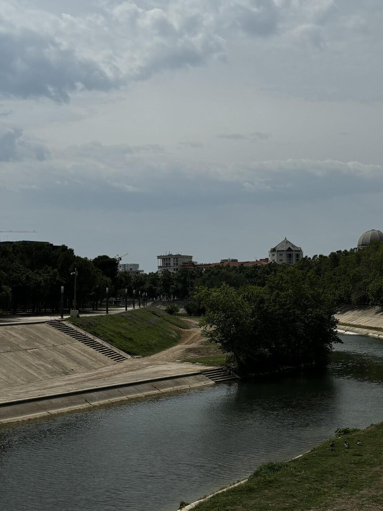
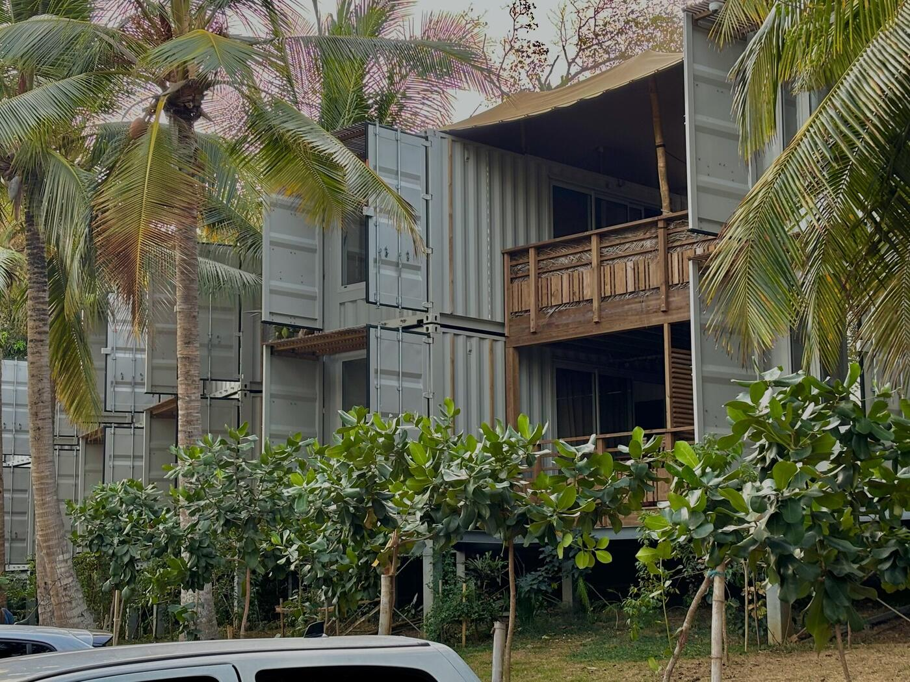
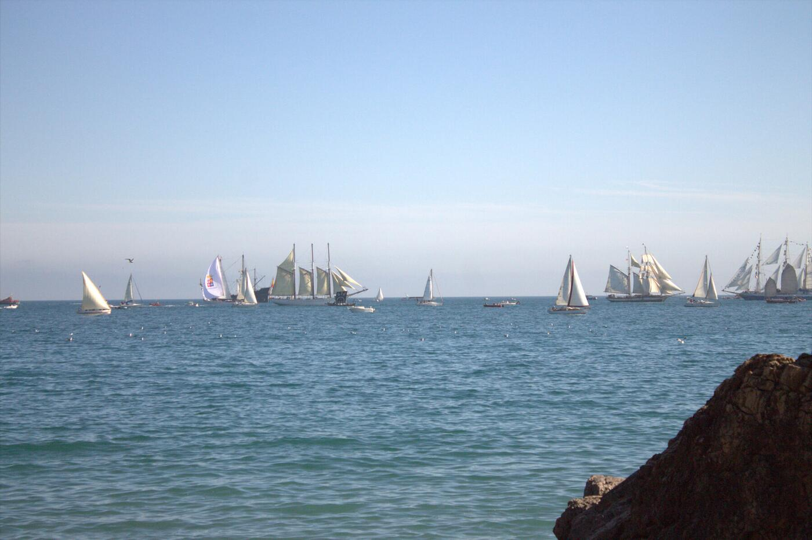

Galerie visuelle
Présentation de photographies personnelles dans une interface dédiée à l'image.
Une galerie personnelle imaginée pour mettre les photographies au premier plan dans une expérience web sobre et responsive.

Créer un espace où l'interface accompagne les photographies sans détourner l'attention.
Cette galerie photo est un projet personnel qui réunit deux dimensions complémentaires : la photographie et la conception d'interfaces web. Son objectif est de présenter des images dans un environnement cohérent, agréable et accessible.
Le travail porte autant sur la mise en page et le rythme visuel que sur l'organisation des fichiers, l'adaptation aux différents écrans et la consultation fluide des photographies.
Présentation de photographies personnelles dans une interface dédiée à l'image.
Organisation des visuels pour créer un parcours fluide et rythmé.
Adaptation de la consultation aux écrans de téléphone, tablette et ordinateur.
Valorisation d'une collection d'images directement intégrées au projet.
Travail sur les contrastes, l'espacement et la lisibilité de l'ensemble.
Classement et intégration de nombreuses photographies dans l'arborescence du site.
Une sélection de photographies réellement présentes dans le projet.



Présenter ensemble des images horizontales et verticales sans casser la composition.Solution : conception d'une grille visuelle et adaptation du cadrage des images.
Conserver l'impact visuel des photographies sur des écrans beaucoup plus étroits.Solution : mise en page responsive et réorganisation des contenus selon l'écran.
Intégrer de nombreuses photographies dans une structure claire et maintenable.Solution : classement des médias dans une arborescence dédiée au projet.
Découvrez la galerie complète et l'ensemble de l'univers photographique.